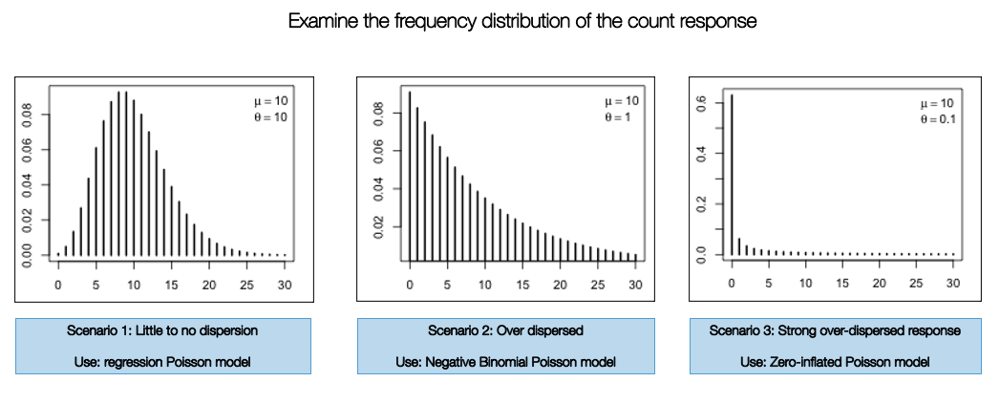

3 Bayesian Generalised Linear Models (GLMs)
3.1 Introduction
3.1.1 Lecture video (Length: 1:16:58)
We will learn how to perform Generalised Linear Modelling (GLMs) within a Bayesian framework using different model types based whether an outcome variable is continuous, binary, binomial, count or categorical. We will show you how one can use Stan to encode various regression model types for likelihood functions that follows either a Normal, Binomial or Poisson distribution.
3.1.2 Learning outcomes
Today’s session aims to formally introduce you to Stan programming for Bayesian regression models. By the end of this session, you should be able to perform the following:
- Select the appropriate likelihood function specification for the Bayesian regression model i.e., normal, binomial or Poisson to model either continuous, binary, or count outcomes respectively;
- How to fully develop Stan code for such regression models with the appropriate prior (i.e., uninformative, weak or informative) specification for various parameters;
- How to interpret the various types of coefficients including Odds Ratios (OR) and Risk Ratios (RR);
You can follow the live walkthrough demonstration, and then use the practical sessions to try the practical tutorials yourself by following the instructions and trying out the tasks.
3.1.4 Datasets & setting up the work directory
Go to your folder CPD-course and create a sub folder called “Day 2”. Here, we will store all our R & Stan scripts as well as the dataset for this session. Set your work directory to Day 2’s folder.
For Windows, the code for setting the work directory will be:
For MAC, the code for setting the work directory will be:
The dataset for this practical are:
Street Burglary Data in Nigeria.csvLondon LSOA 2015 data.csvObesity and Fastfoods in MSOAs data.csv
Let us start with the crime data titled: Street Burglary Data in Nigeria.csv
Context about the dataset: Conventional analyses of crime, based on European research models, are often poorly suited to assessing the specific dimensions of criminality in Africa or elsewhere in the Global South. The data used in today’s practical is an anonymised resampled excerpt from the Development Frontiers in Crime, Livelihoods and Urban Poverty in Nigeria (FCLP) project that aimed to provide an alternative framework for understanding the specific drivers of criminality in a West African urban context. This research project used a mixed-methods approach for combining statistical modeling, geovisualisation and ethnography, and attempted to situate insecurity and crime against a broader backdrop of rapid urban growth, seasonal migration, youth unemployment and informality. The study typically provided researchers both in Nigeria and internationally a richer and more nuanced evidence base on the particular dynamics of crime from an African perspective resulting a number of publications: [1], [2] and [3] .
We will reproduce some of the analysis using a Bayesian regression model.
3.2 Poisson Regression Modelling
We are going to fit a Poisson-type model on an outcome that contains discrete counts of households reporting to have been victims of burglary. These are counts of burglary events aggregated to street segments. Let us load the data into RStudio and call the object burglaryDataset.
# Set your own directory using setwd() function
# Load data into RStudio using read.csv(). The spreadsheet is stored in the object called 'burglaryData'
burglaryDataset <- read.csv("Street Burglary Data in Nigeria.csv")
names(burglaryDataset)3.2.1 Selecting the appropriate Poisson model
There are three different types of Poisson models:
- Standard Poisson regression
- Negative Binomial Poisson regression
- Zero-Inflated Poisson regression
The implementation of one of these models are highly dependent on how the frequency distribution of the count response variable are displayed. If it resembles a normal curve - then use the standard Poisson version. Otherwise, use the Negative Binomial Poisson regression if there is any evidence of over-dispersion. When there’s an inflation of zero counts in the dataset, you will have to use the Zero-Inflated model to account for this problem.

Let’s check the frequency distribution of the outcome variable Burglary which corresponds to the number of reported instances a property on a street was burgled. You can simply use a histogram to examine its distribution:
The plot show evidence of over-dispersion. It indicates that streets in this city have less frequency of burglaries. Here, we consider using a Negative Binomial Poisson regression model over the standard and zero-inflated versions (i.e., scenario 1 and 3). Now, that we know the model type, let’s prepare the dataset for our independent variables.
3.2.2 Data preparation and set-up for Bayesian analysis in Stan
Stan is able to handle continuous variable nicely; but for some strange reasons it’s absolutely terrible with categorical variables! It can only handle them as dummy variables - meaning that the categorical variable must be split into a series of binary variables. You will see what I mean in a second. The following variables: choice, integration, business activities and socioeconomic deprivation, at a street-level are examples of categorical variables which needs to be converted to dummy variables.
They need to be rendered first as a factor using the as.factor() function before implementing the model.matrix() to apply the conversion.
Here is the code:
# change the variable from numeric to a factor variable using the as.factor() function
burglaryDataset$choice_q<- as.factor(burglaryDataset$choice_q)
burglaryDataset$integ_q <- as.factor(burglaryDataset$integ_q)
burglaryDataset$business_q <- as.factor(burglaryDataset$business_q)
burglaryDataset$socioeconomic_q <- as.factor(burglaryDataset$socioeconomic_q)Next, we use the model.matrix() function to apply the conversion:
# extract all the important independent variables to be used in model
SelectedVariables <- burglaryDataset[,c(4,5,6,7,8,9)]
# convert only variable that are factor variables
X <- model.matrix(~ 0 + connectivity + choice_q + integ_q + business_q + socioeconomic_q, data = SelectedVariables)
# see conversion
View(X)Drop any column that is the first category - i.e., for instance choice_q1 is present. This needs to be dropped as it’s the reference category.
All our independent variables are stored in the matrix X. We will now use this and specify it in the model when programming it in Stan. Now, we need to define our dependent variable y i.e., number of reported burglaries on a street, as well as the total numbers of houses on a street as an offset - these two quantities will also need to be specified in our Stan code.
# declare the dependent variable
y <- burglaryDataset$burglary
# declare totalhouse column as the denominators to be imputed as an offset in the model
denominators <- burglaryDataset$totalhousesNow, we need to condense this information into list() object as our dataset for Stan to compile:
stan.negbin.dataset <- list(N=length(y), X=X, k=ncol(X), phi_scale=0.9, y=y, denominators=denominators)Important Notes:
N = length(y)we are extracting the number of observations instead of fully typing the number. Here,Nis743X=X: This is the set of independent variables we created earlier on with the dummy variables etc., It should contain 16 columns.k=ncol(X): We are extracting the number of columns fromXphi_scale = 0.9: Here, we specify our over-dispersion parameter as1y=y: Here, we defined the outcome variable (i.e., counts of burglaries) asydenominators=denominators: Here, we define thetotalhouseto be the denominators in the model
At this point, the dataset is fully prepared in RStudio and is ready to go.
Now, let’s create our Stan script for running a Negative Binomial Poisson regression.
3.2.3 Creating a script to run a Negative Binomial Poisson regression in Stan
A typical Stan program for a regression consist of the following 5 blocks:
- Data
- Transformed data
- Parameters
- Transformed parameters
- Model
- Generated quantities
The Data, Parameters and Model block must be specified for the regression to work. But there will be additional things that we need to transform such as the inputted data, parameters and our estimated coefficients for our relative risk (RR). Let’s start with the data block:
FIRST STEP: We need to specify the total number of observations int N as well as the number of independent variables int k as an integer in the data block. We need to define our y as a vector of size N holding all the values for our dependent variable. We also need to define our independent variables as a matrix X with N number of rows and k number of columns (i.e, matrix[N, k] X). Additionally, we need to define our over-dispersion parameter as a real number real and call it phi_scale. Lastly, we need to define the denominators as a vector:
data {
int<lower = 1> N; // Number of observations
int<lower = 1> k; // Number of columns in X matrix contain independent variables and intercept column
int y[N]; // Dependent variable - Number of reported burglaries on a street segment
matrix[N,k] X; // Model matrix for our independent variables
real phi_scale;
vector<lower = 1>[N] denominators;
}Next, we need to apply a log() transformation on to the denominators to change it as an offset for the model. Here, we are making a direct change to the data; hence, we can use the transformed data block:
data {
int<lower = 1> N; // Number of observations
int<lower = 1> k; // Number of columns in X matrix contain independent variables and intercept column
int y[N]; // Dependent variable - Number of reported burglaries on a street segment
matrix[N,k] X; // Model matrix for our independent variables
real phi_scale;
vector<lower = 1>[N] denominators;
}
transformed data {
vector[N] offset = log(denominators);
}SECOND STEP: For the parameters block, here we will need to specify the name of the regression intercept alpha and the coefficients for all our independent variables. Here, we call defined it as a vector of size k. The reciporcal_phi is a precision estimate which we will need as a prior in our model.
data {
int<lower = 1> N; // Number of observations
int<lower = 1> k; // Number of columns in X matrix contain independent variables and intercept column
int y[N]; // Dependent variable - Number of reported burglaries on a street segment
matrix[N,k] X; // Model matrix for our independent variables
real phi_scale;
vector<lower = 1>[N] denominators;
}
transformed data {
vector[N] offset = log(denominators);
}
parameters {
real alpha; // intercept i.e., overall risk of burglary in population
vector[k] beta; // regression coefficients
real reciporcal_phi; // overdispersion
}THIRD STEP: We define our regression model in the transformed parameters block. mu represents the predicted number of burglaries, which is a vector of N size (i.e., each street). The alpha + beta*X is the regression model. phi is the over-dispersion parameter accounted for in the model:
data {
int<lower = 1> N; // Number of observations
int<lower = 1> k; // Number of columns in X matrix contain independent variables and intercept column
int y[N]; // Dependent variable - Number of reported burglaries on a street segment
matrix[N,k] X; // Model matrix for our independent variables
real phi_scale;
vector<lower = 1>[N] denominators;
}
transformed data {
vector[N] offset = log(denominators);
}
parameters {
real alpha; // intercept i.e., overall risk of burglary in population
vector[k] beta; // regression coefficients
real reciporcal_phi; // overdispersion
}
transformed parameters {
vector[N] mu; // create mu our estimator for model
real phi; // define precision parameter
mu = offset + alpha + X*beta; // linear predictor for mu i.e., predicted burden of burglaries
phi = 1./reciporcal_phi; // precision (akin to variation)
}FOURTH STEP: We build our likelihood function and specify the priors for each parameter under the model block:
data {
int<lower = 1> N; // Number of observations
int<lower = 1> k; // Number of columns in X matrix contain independent variables and intercept column
int y[N]; // Dependent variable - Number of reported burglaries on a street segment
matrix[N,k] X; // Model matrix for our independent variables
real phi_scale;
vector<lower = 1>[N] denominators;
}
transformed data {
vector[N] offset = log(denominators);
}
parameters {
real alpha; // intercept i.e., overall risk of burglary in population
vector[k] beta; // regression coefficients
real reciporcal_phi; // overdispersion
}
transformed parameters {
vector[N] mu; // create mu our estimator for model
real phi; // define precision parameter
mu = offset + alpha + X*beta; // linear predictor for mu i.e., predicted burden of burglaries
phi = 1./reciporcal_phi; // precision (akin to variation)
}
model {
reciporcal_phi ~ cauchy(0, phi_scale); // prior for reciporcal_phi using half-cauchy
alpha ~ normal(0, 10); // prior for intercept i.e., normal with mean 0 and ±10 variance
beta ~ normal(0, 2.5); // prior for beta i.e., normal with mean 0 and ±2.5 variance
y ~ neg_binomial_2_log(mu, phi); // likelihood function for burglaries neg_binomial_2_log()
}LAST STEP: We instruct Stan on the parameters we want to report. We want them a relative risk ratio (RR) or should we say a crime risk ratio (CRR). We use the generated quantities block to obtain the estimates we need i.e., exponentiation pf the intercept and coefficients:
data {
int<lower = 1> N; // Number of observations
int<lower = 1> k; // Number of columns in X matrix contain independent variables and intercept column
int y[N]; // Dependent variable - Number of reported burglaries on a street segment
matrix[N,k] X; // Model matrix for our independent variables
real phi_scale;
vector<lower = 1>[N] denominators;
}
transformed data {
vector[N] offset = log(denominators);
}
parameters {
real alpha; // intercept i.e., overall risk of burglary in population
vector[k] beta; // regression coefficients
real reciporcal_phi; // overdispersion
}
transformed parameters {
vector[N] mu; // create mu our estimator for model
real phi; // define precision parameter
mu = offset + alpha + X*beta; // linear predictor for mu i.e., predicted burden of burglaries
phi = 1./reciporcal_phi; // precision (akin to variation)
}
model {
reciporcal_phi ~ cauchy(0, phi_scale); // prior for reciporcal_phi using half-cauchy
alpha ~ normal(0, 10); // prior for intercept i.e., normal with mean 0 and ±10 variance
beta ~ normal(0, 2.5); // prior for beta i.e., normal with mean 0 and ±2.5 variance
y ~ neg_binomial_2_log(mu, phi); // likelihood function for burglaries neg_binomial_2_log()
}
generated quantities {
vector[N] eta; // vector containing our predicted number of burglaries for each street
vector[k] crr; // vector containing our estimated crime risk ratios for each variable
real alpha_crr;
alpha_crr = exp(alpha);
eta = exp(mu); // overall risk ratio
crr = exp(beta); // risk ratio for each variable
}COMPLIMENTS: Well done, you are doing well! You have coded your first Bayesian regression. Let’s save the script, and then compile and run it through RStudio to get our crime risk ratio (CRR) results.
3.2.4 Compiling our Stan code in RStudio
Now, let us turn our attention to RStudio. Using the stan() to compile and obtain the posterior estimation of the overall risk and crime risk ratios (CRR) for the each independent variable:
# the directory needs to be set to where you saved the dataset and Stan script
crr.negbin.model = stan("Script for NegBin model.stan", data=stan.negbin.dataset, iter=5000, chains=3, verbose = FALSE)
# take roughly 1-2 minutes to compileWe can print the results accordingly:
# reports the crime rate ratio (relative risk)
print(crr.negbin.model, probs=c(0.025, 0.975), pars = c("alpha_crr", "crr", "lp__"))
# take roughly 1-2 minutes to compileOutput summary table
Inference for Stan model: anon_model.
3 chains, each with iter=5000; warmup=2500; thin=1;
post-warmup draws per chain=2500, total post-warmup draws=7500.
mean se_mean sd 2.5% 97.5% n_eff Rhat
alpha_crr 0.27 0.00 0.03 0.21 0.34 3396 1
crr[1] 0.99 0.00 0.01 0.96 1.01 5002 1
crr[2] 0.92 0.00 0.09 0.76 1.11 5148 1
crr[3] 0.95 0.00 0.10 0.77 1.16 4442 1
crr[4] 0.85 0.00 0.12 0.64 1.11 3844 1
crr[5] 0.87 0.00 0.08 0.73 1.04 5146 1
crr[6] 0.86 0.00 0.08 0.71 1.03 4925 1
crr[7] 0.79 0.00 0.08 0.64 0.96 4224 1
crr[8] 1.17 0.00 0.13 0.93 1.45 4524 1
crr[9] 1.05 0.00 0.11 0.85 1.28 4700 1
crr[10] 1.01 0.00 0.11 0.81 1.24 4761 1
crr[11] 1.22 0.00 0.13 0.98 1.49 4473 1
crr[12] 1.00 0.00 0.10 0.81 1.22 4537 1
crr[13] 1.07 0.00 0.11 0.87 1.30 4605 1
crr[14] 0.84 0.00 0.09 0.69 1.02 4788 1
crr[15] 1.02 0.00 0.11 0.82 1.24 4314 1
lp__ -2368.73 0.05 2.94 -2375.15 -2363.93 2862 1
Samples were drawn using NUTS(diag_e) at Tue Jul 11 01:18:07 2023.
For each parameter, n_eff is a crude measure of effective sample size,
and Rhat is the potential scale reduction factor on split chains (at
convergence, Rhat=1).Here is the messing part - interpretation. Before anything, note that alpha_crr corresponds to the intercept. Each crr[1], crr[2],… and so on corresponds to the ordering of the columns’ in X matrix containing the independent variables. If you run this code of colnames(X) - it will print this list of names:
Output
[1] "distance" "connectivity" "choice_q2" "choice_q3" "choice_q4"
[6] "integ_q2" "integ_q3" "integ_q4" "business_q2" "business_q3"
[11] "business_q4" "business_q5" "socioeconomic_q2" "socioeconomic_q3" "socioeconomic_q4"
[16] "socioeconomic_q5"alpha_crris the risk ratio for the interceptcrr[1]corresponds to the continuous distance variablecrr[2]corresponds to the continuous connectivity variablecrr[3],crr[4]andcrr[5]corresponds to the 2nd, 3rd, 4th categories forchoicevariablecrr[6],crr[7]andcrr[8]corresponds to the 2nd, 3rd, 4th categories forintegrationvariablecrr[9],crr[10],crr[11]andcrr[12]corresponds to the 2nd, 3rd, 4th and 5th categories forbusiness activitiesvariablecrr[13],crr[14],crr[15]andcrr[16]corresponds to the 2nd, 3rd, 4th and 5th categories forsocioeconomic deprivationvariable
Interpretation of interesting coefficients:
Connectivity (cont. i.e., crr[2]): For a unit increase in the number of connections on a street segment significantly decreases the risk of burglaries by 8% (CRR 0.92, 95% CrI: 0.76–1.11). or you can say the risk for burglaries in relation to a unit increase in the number of connections on a street are 0.92 times lower.
Integration (cat. i.e., crr[8]): Relative to street segments with lower levels of integration (accessibility) (i.e., category 1), street segments that are in the highest quartile (i.e., highest level of integration) are more likely to report burglaries (4th category verses the 1st: CRR 1.17, 95% CrI: 0.93-1.45) - this category is 1.17 times more likely to report burglaries than the lowest category.
3.2.5 Computing the exceedance probabilities
Exceedance probabilities allows the user to quantify the levels of uncertainty surrounding a parameter of interest. We can set a threshold to compute the probability coefficient might exceed it. It’s a useful quantity especially in risk assessments which allows to user to gauge whether risks of an outcome are in excess.
In this example, we can use a threshold, for instance, an RR > 1 and ask what is the probability that the risk of burglary is excessively high in a particular variable. In order to compute, these exceedance probabilities, we will need to use functions from the tidybayes and tidyverse packages i.e., spread_draws(), group_by(), summarise() and pull().
# create a function to summarise the posterior distribution for each coefficient exceeding 1.00 as threshold
threshold.crr <- function(x){mean(x > 1)}
# use spread_draws() and pull() functions to compute exceedance probability from threhold.crr() function in summarise()
crr.exc.probs <- crr.negbin.model %>% spread_draws(crr[i]) %>%
group_by(i) %>% summarise(crr=threshold.crr(crr)) %>%
pull(crr)
# report the exceedance probabilities for each variable and categories
crr.exc.probsResults for exceedance probabilities for each coefficient:
[1] 0.147333333 0.191333333 0.299200000 0.107600000 0.066400000 0.053866667 0.007866667 0.910400000 0.651333333
[10] 0.522266667 0.960800000 0.483066667 0.721733333 0.040400000 0.561200000The exceedance probability estimate for 0.9104 corresponds to relative risk coefficient for Integration (cat. i.e., crr[8]). Meaning that 91.04% probability for street segments with the highest levels of accessibility having excess risk of burglaries compared to those with lower levels of accessibility. For connectivity, because it had a lower risk ratio, its exceedance probability is very low i.e., 0.191 (19.13%).
3.3 Tasks
3.3.1 Task 1 - Obesity and Fastfoods in London
Accessibility to junk food restaurants in young adolescents especially after school hours is a growing cause for concern. Especially, now that many young adults have a sedentary lifestyle; hence obesity rates among this population is increasing in the UK.
Try this problem in Stan: Use the dataset Obesity and Fastfoods in MSOAs data.csv to determine the links between prevalence of obesity in high school students and density of fast food (cheap) restaurant and deprivation in MSOAs in London. Implement a Bayesian GLM using Stan code.
Variable names:
SEQID: ID number for rowMSOA11CD: Unique identifier for MSOA areaMSOA11NM: Name of the MSOA areaOBESE: Number of child identified as obese in MSOA in LondonTOTAL: Total number of children surveyed for BMI measurementsIMDMSOA: Area-level socioeconomic deprivation score (higher scores means higher deprivation and vice versa)RESTCAT: Categorical variable for classifying an MSOA in terms of density of junk/cheap fast food outlets restaurants:1 = 1 to 10,2= 11 to 25,3= 26 to 50and4= 51 to 300.
HINT: You might want to consider using the following functions: binomial_logit() or binomial() in the model block and reporting the odd ratios using the generated quantities block. Also, use the as.factor() for independent variables that are categorical. You can put all independent variables into a matrix using the code using the model.matrix() function. You might want to consider computing the exceedance probabilities for the odd ratios using the threshold of 1.
3.3.2 Task 2 - Factors affecting house prices in London (2015)
Try this problem in Stan: Use London LSOA 2015 data.csv data pertained house prices in 2015, and assess it’s relationship with public transport accessibility (PTA), average income and socioeconomic deprivation (IMD) as the independent variables. Implement a Bayesian GLM using Stan code.
Variables names:
LSOACODE: Unique identification code for the geographic areaAVEPRICE: (Dependent variable) Average house price estimated for the LSOA in 2015AVEINCOME: Estimated average annual income for households within an LSOA in 2015IMDSCORE: Deprivation score for an LSOA in 2015PTAINDEX: Measures levels of access/connectivity to public transport
HINT: You might want to consider using the following functions: normal() in the model block. You might want to consider computing the exceedance probabilities for the coefficients using the threshold of 0.
Note: Solutions will be made available later today.